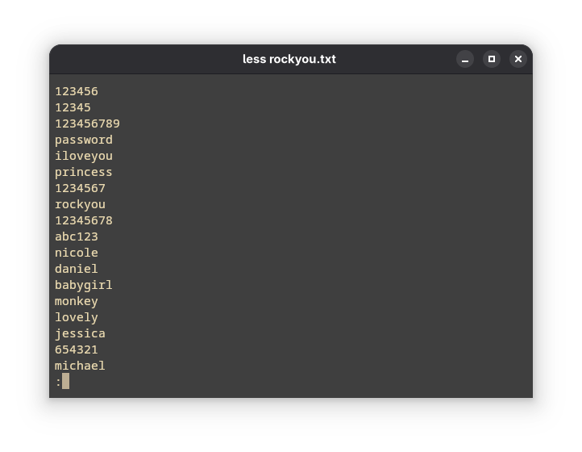

Password math is mind-boggling.
Say you have a password of about a that can range from 8 to 16 characters. There are around 70 typeable keys on a standard QWERTY keyboard. Let's try to make sense of it using some good old series notation. $$ \sum_{n=8}^{16} 70^n $$
That gives us a compact notation to represent the entire keyspace in which the password might exist. To put it in numerical figures, it comes out to be somewhere around 337145672445227527877100000000.
That’s over a hundred octillion possibilities — more than the estimated number of sand grains on all the beaches of Earth, stars in the Milky Way, and Google searches ever made — combined. And thats just if we limit ourselves to the range of 8 to 16 character long passwords. Major services provide the range of 8 to 100 characters.
So how do we- as mortals- make sense of this seemingly gigantic number?
Well it's simple really. We focus on the things that are making these passwords- people. Man is the most exploitable part of the security ecosystem. About 95% of the security faults happen today, happen because of man.
How would a normal, ignorant person make his passwords? He/She would reuse the words, phrases and figures closest to him. The first few lines of rockyou.txt make this clear to us:

"A man is defined by the company he keeps."
The whole idea is based around the fact that through his social connections, there might be some words/characters whose combination makes up one of his passwords. So we need to define a social structure of people that surrounds our target and utilize it to generate the wordlist that we'll eventually use in our attacks. We also need to sort the passwords from high probability to low probability so that we'll reduce time spent in brute-forcing the passwords.
The source code for this project is over at https://github.com/syswraith/ryukendo. If you find something you want to talk about, do contribute by opening an issue or a pull request :)
In the profiles directory, we define any number of people related to our target. Here's an example:
{
"first_name": "Aarav",
"middle_name": "Ishaan",
"last_name": "Mehta",
"affiliation": ["ShadowPaws", "mochi_zone", "TeamNova", "ravbyte"],
"mutuals": 3,
"intimacy": 3,
"frequency_of_contact": 2,
"shared_xp": 3,
"time_known": 4,
"numbers": [17, 204, 88]
}
There's two main phases I have implement the wordlist generator in: the generation phase and the sorting phase.
first_name, middle_name, last_name, affiliations, numbers are taken into consideration. str_in (string in) and str_not_in (string not in) to remove the passwords that are not likely to be in the list. filters directory. I'm working on some of them but at the time of writing, none of them are ready to be pushed into the repository. Hopefully in the future :) Ideal assumption is that a target's closeness to himself is 1.0. That is the ideal closeness. Any person who comes closer to one is ranked higher in the list.
Makefile. The order they should be executed in is as follows:make connections to define your target and connectionsmake passwords to start generatng the passwordsmake filter to filter out passwords according to the filtersmake clear_cache to clear the generated cachemake clear_profiles to clear the generated profilesmake clear_wordlists to clear the generated wordlistsHere are some of the most popular wordlist generators that I've taken inspiration from:
You can use CeWL to generate keywords that the person might be affiliated to and add them in the affiliations attribute of the JSON file.
Hashcat rule-engine in particular allows for a very good munging. If you want to use it, run the following command and use hashcat_wordlist.txt instead wordlist.txt of for sorting. Use any rules that you see fit, in this example I'll be using stealthsploit's OneRuleToRuleThemStill.hashcat --force wordlist.txt -r OneRuleToRuleThemStill.rule --stdout > hashcat_wordlist.txt